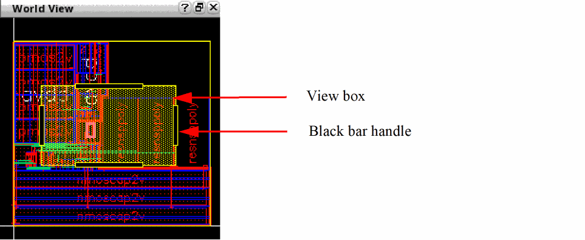

Navigating a Design Using the World View Assistant
The World View assistant shows the complete picture of your design and its relationship to the main window. The part of the design currently displayed on the canvas is marked with a view box in the assistant. The World View assistant acts as a navigation tool, and is especially useful in large designs and when working at high zoom levels.
To navigate a design by using the World View assistant:
-
In the layout window, choose Window – Assistants – World View to open the World View assistant. Alternatively, right-click anywhere on the layout window menu bar and choose Assistants – World View.
The World View assistant appears, marking the current design area displayed on the canvas with a view box, represented by a yellow rectangle.
 -
Resize the view box by using the black bar handles to zoom in or zoom out the design on the canvas.
When you hold down the left mouse button on a handle of the view box and drag inward or outward, the view box increases or decreases in size and the design on the canvas zooms in or zooms out corresponding to the size of the view box. -
Click the desired design area in the assistant or drag the view box to a new location.
The design area on the canvas is displayed accordingly. - Explore the options on the context menu to navigate your design by right-clicking the design in the World View assistant and choosing an option to perform the desired task. You can refresh the window, zoom in or zoom out the design, fit the entire design into the World View assistant window, and set the color luminosity of the view box.
Related Topics
Return to top